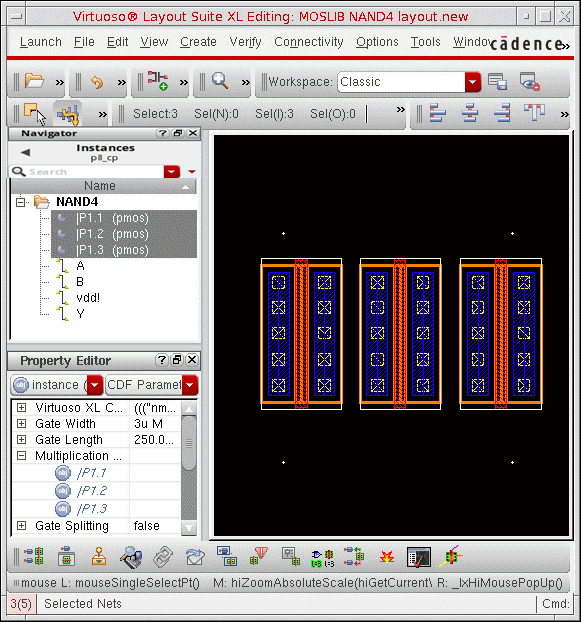
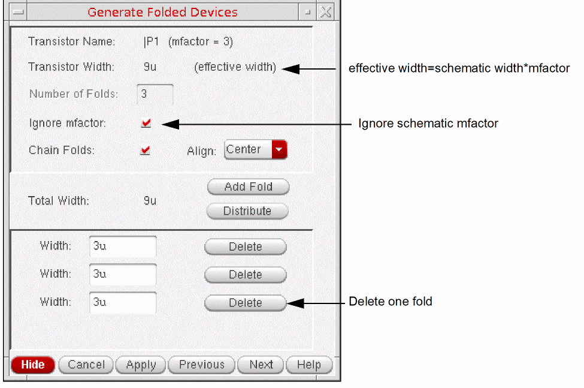
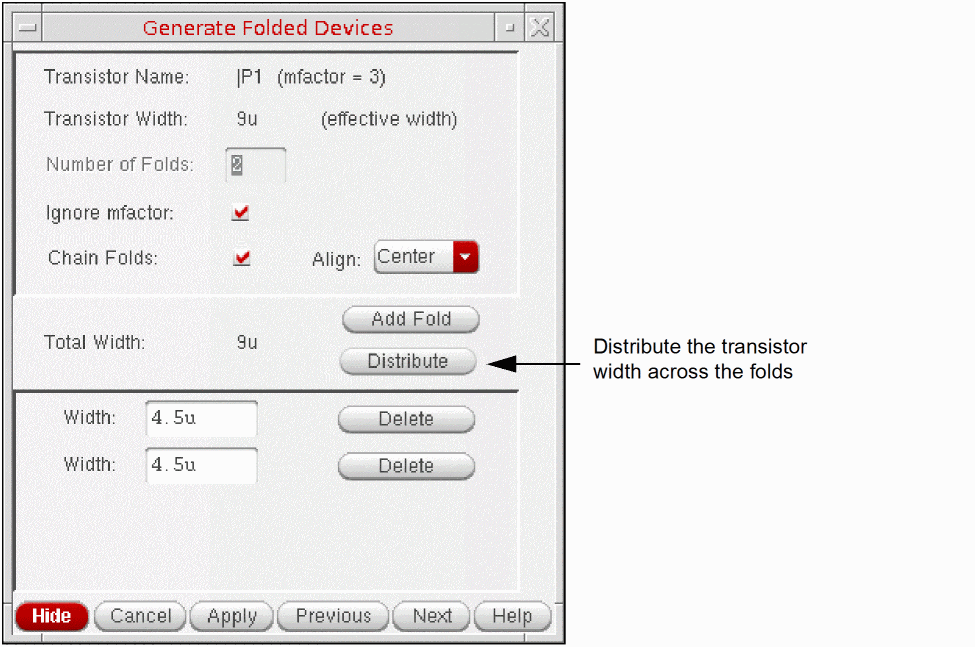
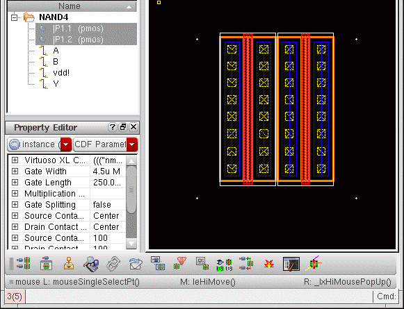

Ignoring Schematic Mfactor during Folding
By default, interactive folding is constrained by the multiplication factor property set for the instance in the schematic view. You can set the Ignore mfactor option in the Generate Folded Devices form to gain more flexibility when folding your device.
Consider a schematic instance P1 with a multiplication factor of 3 and each part with a gate width of 3u. The device is generated in the layout view as shown below.

You want to regenerate this device as two folds, each 4.5u wide. To do this:
- Select any of the mfactor parts in the layout window.
-
Choose Connectivity – Generate – Folded Devices.
The Generate Folded Devices form is displayed. -
Select the Ignore mfactor option.
The Transistor Width is set to the effective width in the schematic; that is, the product of mfactor and schematic gate width. -
Delete one of the listed folds.
 -
Click the Distribute button to divide the transistor width evenly across the remaining folds, resulting in two folds of 4.5u.
You can also type values into each Width field. The system issues a warning if the total width you specify exceeds the schematic width or the effective width. -
Click Apply in the form, and then click in the canvas to place the new folded device.
The device is generated as two folds, each 4.5u wide.
Check Against Source will report that the device is implemented in the layout using fewer instances than are specified in the schematic.
Related Topics
Return to top